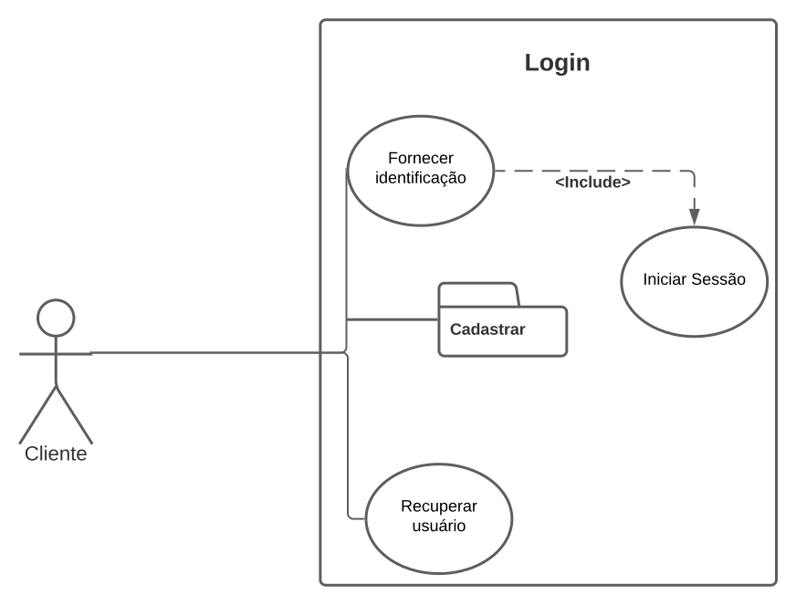
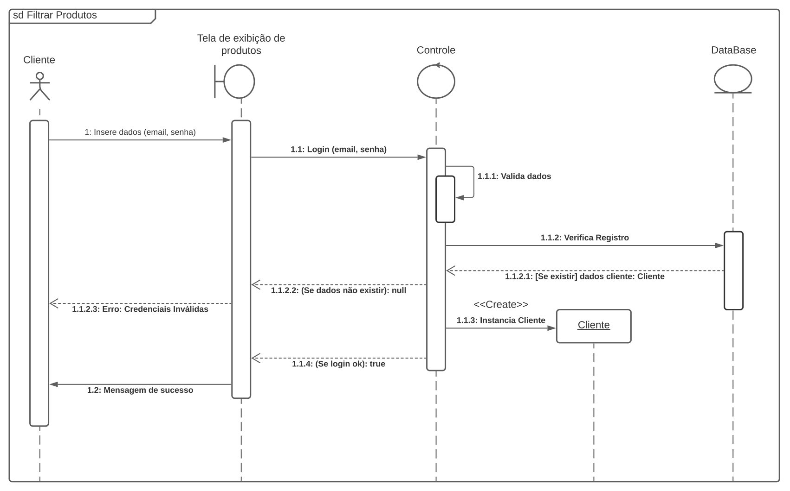

Sumário: O cliente se identifica para o sistema, para obter acesso aos seus dados pessoais e realizar algumas ações no próprio sistema.
Ator primário: Cliente.
Pré-condições: O cliente deve ter clicado na aba “Realizar login”, no cabeçalho do site
Fluxo principal
- O sistema solicita que o usuário informe sua identificação: e-mail e senha.
- O cliente informa seus dados.
- O cliente deve apertar o botão: Login.
- O sistema verifica se os dados informados são válidos e realiza o login.
Fluxo alternativo (2): Caso o cliente não tenha preenchido algum dado.
- O cliente clica no botão: login.
- O sistema exibe um alerta em vermelho, destacando o item que falta para ser preenchido.
- O sistema informa que aquele campo é obrigatório e deve ser preenchido para prosseguir com a ação.
- O cliente preenche o campo.
- O sistema verifica os dados e realiza o login.
Fluxo alternativo (2): O cliente não lembra sua senha.
- O cliente aperta o botão: “Esqueci minha senha”.
- O sistema abre um caixa popUp e solicita que o cliente informe o e-mail cadastrado.
- O sistema envia um e-mail para o endereço cadastrado com um código de 6 dígitos.
- O sistema solicita que o cliente informe o código enviado.
- Caso o código for válido, o sistema abre um novo popUp para redefinir a senha. Caso a validação for falsa, o popUp será fechado.
Fluxo alternativo (4): A verificação do sistema indicou algum erro.
- O sistema destaca os campos de e-mail e senha de vermelho e mostra a mensagem: “e-mail ou senha inválidos”.
- O cliente tenta verificar os dados e tenta novamente o login com os dados atualizados.
- O cliente aperta o botão login.
- O sistema verifica os dados informados. Caso a validação seja inválida novamente, retorna aos passos 1,2,3. Caso a validação seja aceita, o login será efetuado.
Pós-Condições: Após efetuar o login o cliente será direcionado para a HomePage do site.
